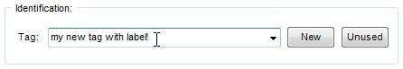
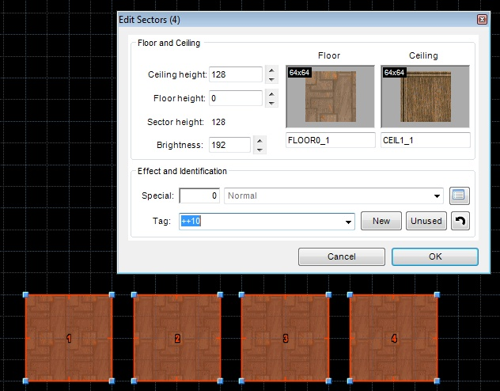
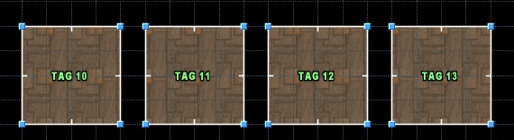
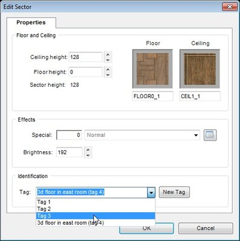
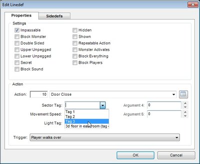
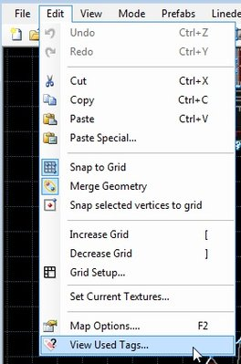
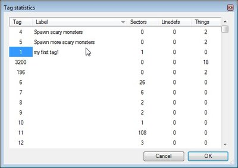
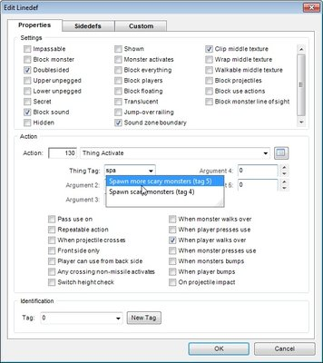
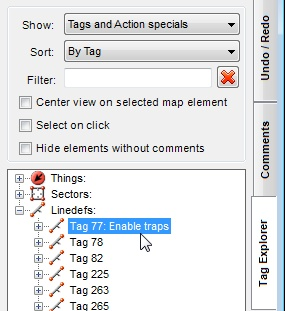

你可以输入"++N"或"--N"作为标签，以将标签增加或减少 N。
当选中多个地图元素时，你可以输入">=N"或"<=N"作为标签来设置标签范围。
示例：要为选中的扇区设置从 10 开始依次递增的标签，请输入">=10"作为标签并按下 OK 按钮：


| 如果某个标签已在地图中使用，你可以从列表中选择它： |  |
这也适用于动作参数。这种情况下只会显示相关的标签（例如，如果参数是扇区标签，则下拉列表中只会显示扇区标签）。 |
 |
你可以为标签添加名称。这可以通过几种方式完成：
1. 如果你在标签选择器中输入任意文本，则会查找一个未使用的标签编号，并将你的文本作为名称分配给该标签（这对动作参数无效）。
2. 你可以使用标签统计对话框查看地图中使用的所有标签，并查看和编辑标签名称（如果有为标签分配名称）：


双击"Label"列中的值可编辑标签名称。
双击 Sectors、Linedefs 或 Things 单元格可选中地图元素，右键单击可打开其属性。
所有列都可以排序。
标签名称支持自动补全。开始输入标签名称即可显示自动补全列表：

当排序模式设置为"By Tag"时，标签名称将显示在标签浏览器中：
